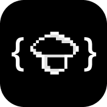
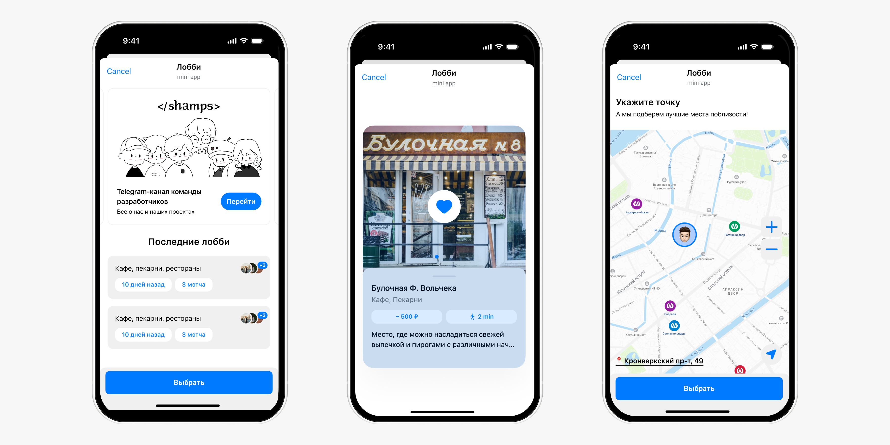
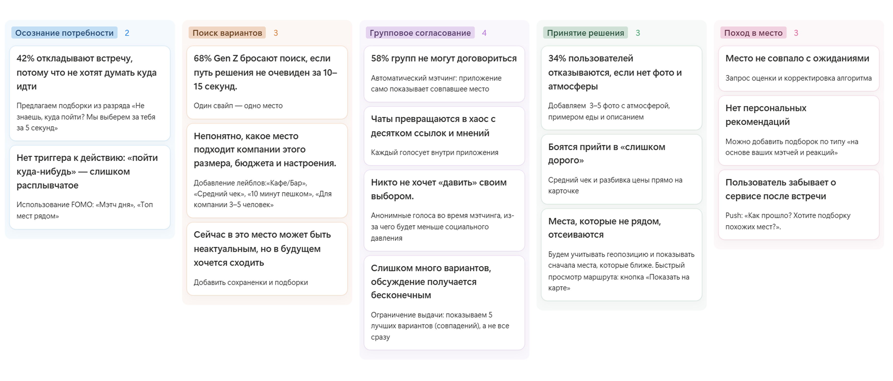
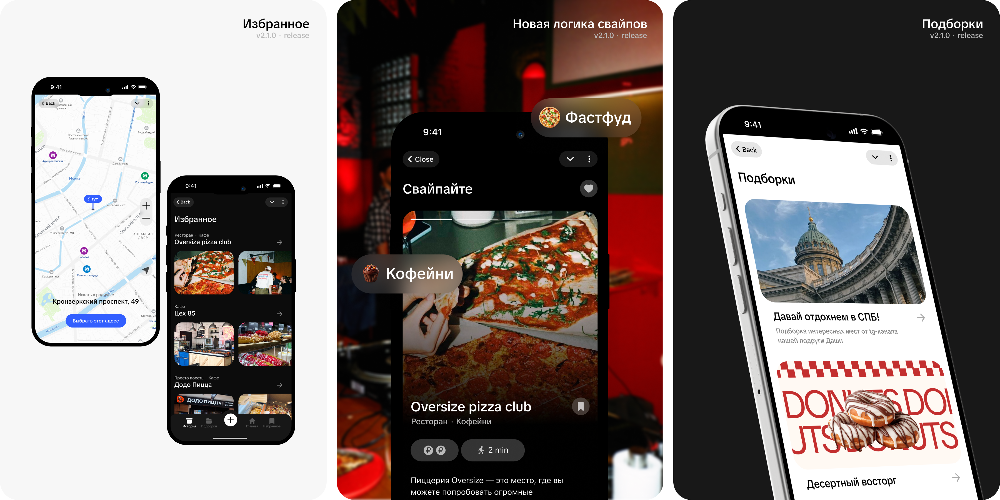
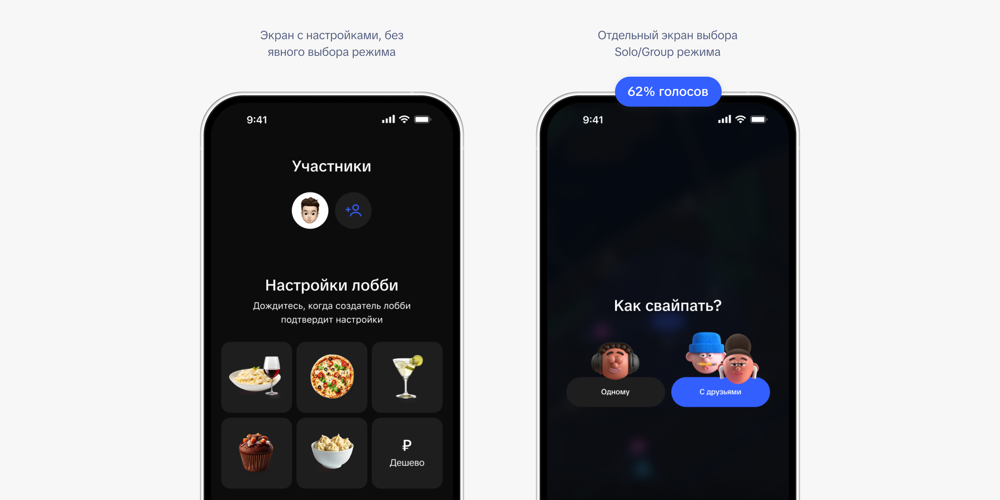
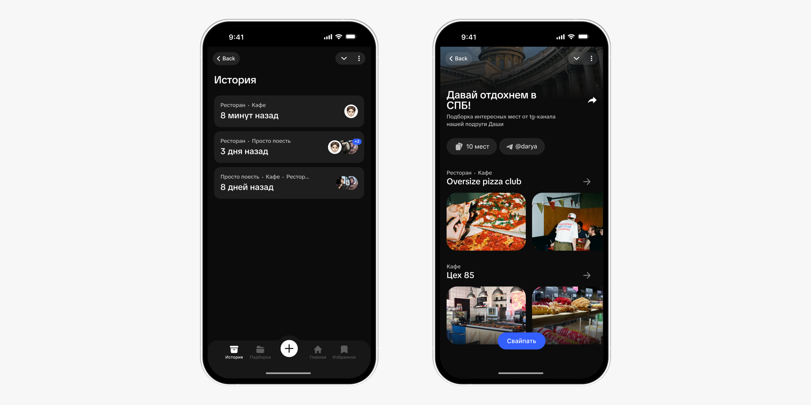

Редизайн foodtech-приложение для совместного выбора заведений
DishDash помогает компаниям друзей быстрее договориться, куда пойти. Вместо долгих обсуждений в чатах пользователи вместе свайпают карточки заведений и находят вариант, который подходит всем.
июль 2024 — май 2025

ШампсТех12% → 48%
1.94K
2.5K+
Запущено в Telegram Mini App

Задача
Выбор места в компании сложнее, чем одиночный поиск, так как у людей разные предпочтения, варианты быстро теряются в переписке, а итоговое решение часто принимает самый активный участник. Сервисы с картами и подборками помогают выбрать место одному, но игнорируют групповой сценарий.
Нужно было придумать и запустить сервис, который решает эту боль, быстро проверить гипотезы на реальных пользователях, сформировать визуальный стиль, близкий молодёжной аудитории, и добиться органического роста без бюджета на продвижение.
Моя роль
Я отвечала за редизайн продукта после MVP, включая:
- UX-аудит первой версии
- Исследование аудитории, конкурентный анализ
- Переработку пользовательских сценариев
- Визуальный стиль и tone of voice
- Прототипы и A/B-тесты
- Передача разработчикам
- Промо-материалы и запуск в студенческой среде
Сложности
Проект запускался как мини-стартап без бюджета на продвижение, поэтому продукт должен был цеплять аудиторию уже с первого взаимодействия.
Главный вызов был в том, чтобы сократить путь от обсуждения до общего выбора, так как студенты и зумеры привыкли к лёгким механикам, где решение принимается через короткое действие, поэтому интерфейс должен был быстро решать задачу.
Исходная версия
DishDash начинался как Telegram Mini App. Такой формат помог быстро проверить идею и получить первый фидбек, но после тестов стало понятно, что MVP не выдерживает следующий этап роста. Продукту не хватало собственного визуального языка и сценарии требовали серьёзной доработки. Это стало отправной точкой для редизайна.

UX-аудит + Исследование
Проанализировала MVP и провела интервью с целевой аудиторией, собрала CJM выбора места в компании и выявила основные проблемы:
- Часть участников воспринимала DishDash только как сервис для компании и не догадывалась, что им можно пользоваться одному.
- Пользователи путались в жестах лайк/дизлайк и не всегда понимали, куда свайпать.
- Главный экран выглядел пустым и не объяснял, что делать дальше.
- Нет понятных действий, все настройки находятся в одном месте.
- На карте было сложно ориентироваться.
- Понравившиеся места терялись, потому что не было сохранёнок и истории выбора.
Бенчмаркинг
Я изучила Яндекс.Карты и 2ГИС, чтобы понять, как крупные сервисы работают с подборками, рекомендациями, фильтрами и избранным. У конкурентов хорошо развиты карты, категории и подборки, но они в основном решают сценарий одиночного выбора. Групповой сценарий остаётся вне фокуса, и пользователю всё равно приходится отправлять ссылки друзьям и обсуждать варианты отдельно.
Это подтвердило направление для DishDash: строить продукт не как ещё один каталог заведений, а как сервис для совместного решения.

Гипотезы
Сформулировала гипотезы и зафиксировала стартовые метрики, чтобы после редизайна определить, сработали ли изменения.
Если явно разделить Solo и Group, пользователи быстрее поймут, что DishDash можно использовать не только с компанией, но и для личного выбора места.
Если разнести настройку выбора на понятные шаги и заменить ползунок с точными ценами на визуальные категории, пользователи будут чаще доходить до карточек заведений без потери фокуса.
Если добавить избранное и историю свайпов, пользователи перестанут терять понравившиеся места и будут чаще возвращаться в приложение.
Если добавить станции метро и радиус поиска, пользователи будут быстрее ориентироваться на карте и точнее задавать зону поиска.
Если показывать лайки друзей прямо на карточках в момент свайпа, пользователям будет проще принимать общее решение за счёт социального фактора.
Если дать пользователям возможность создавать подборки и делиться ими с друзьями, это усилит возвращаемость и поможет привлечь новую аудиторию через рекомендации.
Если добавить персонализацию главного экрана, приветствие по имени, время суток и сторис с обновлениями, пользователи будут чаще возвращаться в приложение.
Если сделать визуальный стиль более живым и близким студенческой аудитории, продукт будет легче распространяться среди новых пользователей.

Ключевые решения
1. Разделила Solo и Group
В MVP пользователи не всегда понимали, что DishDash можно использовать не только с компанией, но и для личного выбора места.
Я вынесла Solo и Group в отдельный шаг, чтобы сразу показать два сценария использования и убрать путаницу на старте.

2. Добавила сохранёнки, историю и подборки
В первой версии с места, которые понравились и могли бы быть полезными в будущем, нельзя было сохранить и вернуться к ним позже.
Я добавила сохранённые места, историю выбора и подборки, чтобы у продукта появился сценарий после первой сессии.

3. Пересобрала визуальный стиль
Проект запускался для студенческой аудитории, поэтому интерфейс должен был и решать задачу, и цеплять с первого касания.
Я сделала стиль более живым, мемным и менее официальным, а затем перенесла его в интерфейс, постеры и промо.